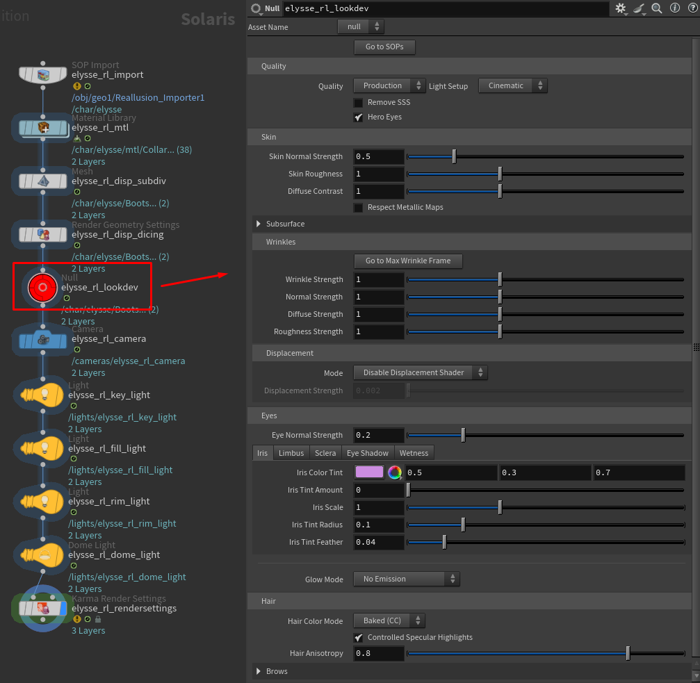

The Lookdev Controller
When you click Build Character, the tool creates a bright red controller node in the LOP network (Solaris). This node is the heart of the whole look-development workflow — every material the tool builds references it, so adjusting a control here updates your character's look live in the Karma render.

Finding it
Click the Go to LOPs button on the Reallusion Importer node to jump straight to the controller. It's the red, circular node — hard to miss. If you have several characters in your scene, each one gets its own controller, named after that character.
How it works
Think of the controller as your character's "look dashboard." The materials don't store their own settings — instead they read from this controller. That means:
- Changes are live. Drag a slider and the Karma render updates (with a couple of exceptions noted below).
- Your settings survive rebuilds. If you rebuild the character (for example after changing an export), your dialed-in look values are preserved — the controller isn't wiped.
- Everything is in one place. No hunting through dozens of shader nodes.
A few controls need a render restart
Most controls update live. A small number — the eye light controls and SSS Quality — are Karma render properties, which Karma only reads when a render starts. If one of these doesn't seem to update, restart your Karma render. Each such control says so in its tooltip, and we note it on the relevant pages.
The control folders
The controller's parameters are organized into folders, each covering one aspect of the character. Every folder has its own page in this documentation:
- Quality — fast preview vs. full production quality, plus the light rig preset. Covered below.
- Skin — roughness, normal detail, color contrast; contains the Skin Re-tint, Teeth, Subsurface, Wrinkles, and Displacement sub-folders.
- Wrinkles — the animated expression-wrinkle system.
- Displacement — fine surface relief from displacement maps.
- Eyes — stylized glow and eyes-as-light-source.
- Hair — re-dyeing, highlights, and realistic sheen; contains the Brows sub-folder.
Clothing & accessories
You'll notice there's no folder for clothing or accessories — that's intentional. The tool shades clothing, shoes, props, horns, GoZ garments, and other accessories automatically as physically-based dielectric MaterialX materials, using the textures (and, for untextured custom accessories, the colors stored in the character's .json). They come in looking correct with no controls to dial, which is why they don't appear on the controller.
The one related control lives in the Skin folder: Respect Metallic Maps. Character Creator sometimes writes junk metallic maps onto fabric and inner-mouth materials; the tool ignores them by default so those surfaces read correctly. Turn it on only for a character with genuinely metallic clothing or accessories. See Skin.
The Quality folder
The Quality folder is worth understanding first, because it controls the speed-vs-fidelity trade-off for your whole look-dev session.
Quality (Preview / Production)
This is a master preset with two settings:
- Preview — turns off subsurface scattering and uses cheap, fast eyes. Use this while you're framing shots and dialing in poses; it's much faster to render.
- Production — restores full subsurface scattering and high-quality refractive eyes. Switch to this for your final renders.
Switching this preset flips the two toggles below it automatically.
Remove SSS
Disables subsurface scattering on skin and teeth. Subsurface scattering is what gives skin its soft, translucent, lifelike quality — but it's also the single most expensive part of the render. Turning it off is the biggest single speed-up available, which is why Preview mode uses it.
Hero Eyes
Switches the eyes between two quality levels:
- On — refractive, ray-traced corneas for close-up realism. Use for hero shots where the eyes are prominent.
- Off — a cheaper cutout cornea, faster and perfectly fine for distant or background characters.
Light Setup
Switches the auto-generated light rig between two pre-tuned looks:
- Cinematic — a warm key light with moody, richly shadowed fill. Good for portrait and dramatic hero shots.
- Neutral — flat, even, neutral-white lighting. Good for look-dev where you want to see the materials clearly without a strong mood.
Changing this re-tints the rig immediately. It only affects the three-point rig the tool built — your own lights are untouched. If you haven't used Create Render Setup this control has no effect.
Workflow tip
Stay in Preview while you set up your shot and animation, then switch to Production only for your final, high-quality renders. You'll spend far less time waiting for the viewport to refresh.
Top buttons
At the top of the controller, sharing one row, are two buttons:
- Go to SOPs — jumps back to the Reallusion Importer node (useful when you're deep in the LOP network).
- Reset to Defaults — returns every control on the controller to its original default value, restoring the out-of-the-box look. It asks for confirmation first, because it discards all your dialed-in settings and can't be undone from here. Reset only changes the controller's values — it doesn't rebuild the character or retint the light rig.
There's one more helper button elsewhere:
- Inside the Wrinkles folder, Go to Max Wrinkle Frame — automatically scrubs the timeline to the frame where the character's facial expression is most extreme, so you can judge wrinkles at their strongest. See Wrinkles.